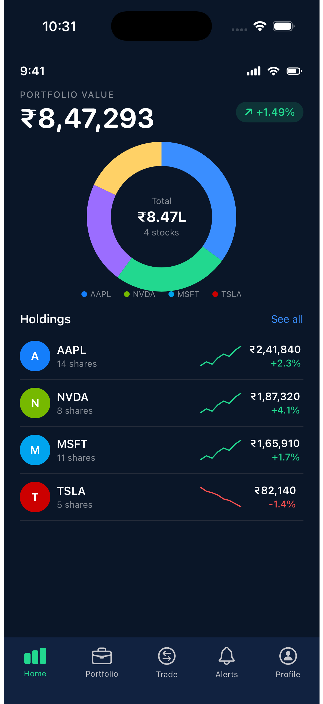
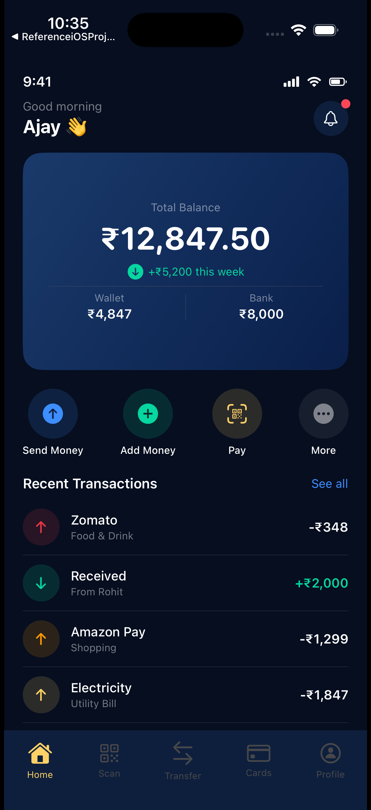

Senior iOS Developer / iOS Architect
I build iOS apps that
Helping startups and businesses turn ideas into polished, production-ready iOS applications with Swift, SwiftUI, architecture strategy, and reliable delivery.
Available for freelance
Remote-friendly
Architecture to App Store


11+
Years of iOS Engineering
20+
iOS Apps Shipped
4
Enterprise Clients
30%
Avg Performance Improvement
Trust & Proof
Built for teams that care about speed, polish, and long-term quality.
FinTech & Banking
Enterprise Grade
Media Streaming
App Store Ready
I help ambitious teams turn iOS ideas into dependable products.
I'm not just here to write code. I help shape product direction, reduce delivery risk, and create app experiences users trust.
Over the last decade, I've worked on enterprise-scale iOS applications, startup-style execution, architecture planning, performance optimization, and production support. That means I can contribute where many freelance developers stop: technical clarity, communication, and long-term product health.
2021 – PresentSenior iOS engineering and architecture at a top US retirement platform
2019 – 2021Delivery quality, mentoring, and production support at a global banking app
2015 – 2019Built strong native iOS foundations across product teams
Services
Clear, premium iOS services for founders, teams, and agencies.
01
iOS App Development
Native app development with Swift, SwiftUI, and UIKit for polished production experiences.
Best for startups and businesses building new iPhone products.02
App Architecture & Refactoring
Stabilize codebases with cleaner structure, better maintainability, and scalable engineering practices.
Best for teams outgrowing early-stage code or battling technical debt.03
MVP Development
Move from concept to launch-ready iOS MVP with the right tradeoffs, speed, and product focus.
Best for founders validating an idea or raising early traction.04
Performance Optimization
Improve speed, responsiveness, memory behavior, and user-perceived smoothness across critical flows.
Best for apps that feel slow, heavy, or unstable in production.05
App Store Launch Support
Prepare your app for release with strong technical readiness, quality checks, and smoother deployment.
Best for teams heading toward first launch or important release milestones.06
Consulting & Code Reviews
Targeted senior-level guidance to unblock architecture, delivery, or code quality decisions fast.
Best for founders, agencies, or internal teams needing expert backup.Real product work, framed around problems solved and outcomes delivered.
FintechRetirement product flows
Top US Retirement Platform / Financial Services
Situation: A retirement platform serving millions of account holders needed iOS engineers who could own entire feature domains — not just implement designs.
Scaling complex investment and transaction experiences.
The challenge was to support feature-rich financial journeys while keeping the architecture scalable and maintainable. I helped design and implement server-driven patterns and delivered major feature areas including retirement management flows.
- Solution: Server-driven iOS architecture with reusable, scalable flows
- Stack: Swift, SwiftUI, UIKit, Combine, REST APIs
- Impact: Faster feature delivery and stronger long-term maintainability
Before: hardcoded screen states requiring app updates for every change. After: server-driven architecture — new flows ship without releases.
BankingQuality and release confidence
Global Banking App / Enterprise Delivery
Situation: A global consumer banking app needed improved engineering discipline — faster triage, better test coverage, and production monitoring that actually caught issues early.
Improving code quality and release reliability.
I worked across engineering quality, mentoring, and production support to help the team move with more consistency. That included code reviews, testing improvements, linting standards, and issue diagnosis in live environments.
- Solution: Better testing strategy, linting, mentoring, and production triage
- Stack: Swift, UIKit, SwiftLint, Snapshot Testing, Splunk, App Dynamics
- Impact: More reliable delivery process and stronger engineering discipline
Before: production issues chased for days. After: monitoring-correlated triage resolving incidents within hours.
MediaPerformance-first user experience
Media Streaming Platform / Entertainment
Situation: A media streaming app had main-thread asset loading blocking the UI — users noticed sluggishness on landing, directly impacting engagement.
Making content delivery faster and smoother.
The goal was to improve performance and modernize parts of the codebase while supporting TV-linked entertainment experiences. I migrated code to Swift and improved landing page responsiveness through background-threading and refactoring.
- Solution: Background-thread asset cache, Swift migration, threading refactor
- Stack: Swift, Objective-C, UIKit
- Impact: 20–30% faster landing page load performance
Before: main-thread asset loading blocking UI. After: 20–30% faster measured in Instruments.
Architecture Reference Projects
Real SwiftUI code — patterns I use in production.
These are architectural showcase projects demonstrating production patterns across FinTech, Payments, E-Commerce, Social, and App Store domains. Full SwiftUI source shared during discovery calls.
Investment Portfolio Tracker
WealthKit
Problem: Most fintech apps hardcode their screen states — every UI change requires an app update. WealthKit demonstrates a server-driven architecture where new investment flows ship from the backend without a release.
Result: Real-time portfolio donut chart, live stock P&L, mutual fund discovery — all zero hardcoded screen states.
- Server-driven UI — flows configured from backend
- Real-time portfolio donut chart with AAPL, NVDA, MSFT, TSLA
- Mutual funds browser — Equity, Debt, Hybrid, Index, ELSS
- Secure Keychain + Face ID biometric auth
- Background data sync with Combine pipelines
SwiftSwiftUICombineChartsCore DataREST APIKeychain
View Source on GitHub →
SwiftUI source shared on discovery call
Digital Payments & UPI
PaySwift
Problem: Payment apps need a trust-first UX — users must feel every rupee is safe. PaySwift prioritises security-at-glance design: Face ID entry, encrypted transaction state, and a QR scanner that validates before it pays.
Result: Send, receive, and scan-to-pay flows secured end-to-end with Secure Enclave and biometric auth — no plaintext values ever leave the device.
- Wallet + bank balance dashboard in one view
- Send money, add money, Scan & Pay (QR)
- Transaction history with category tagging
- Face ID / Touch ID authentication gate
- Secure Enclave key storage — no plaintext on disk
SwiftSwiftUISecure EnclaveLocalAuthenticationAVFoundationUPI API
View GitHub →
Security writeup on request
E-Commerce Platform
ShopEase
Problem: Shopping apps live or die by their browse-to-checkout speed. ShopEase demonstrates an architecture where category browsing, product listings, and cart state all persist across sessions — no lost carts on app relaunch.
Result: Persistent cart, offline-ready product cache, and Apple Pay one-tap checkout — engineered to minimise drop-off at every funnel step.
- Dynamic promotions banner (Mega Sale, Up to 70% OFF)
- Category grid — Electronics, Fashion, Grocery, Beauty, Sports
- Today's Deals with discount badges and pricing
- Persistent cart with Core Data — survives app restart
- Apple Pay one-tap checkout integration
SwiftSwiftUICore DataREST APIApple PayStoreKit
View GitHub →
Code available on request
Social Media Platform
SocialFlow
Problem: Social apps are the hardest category to build — real-time feeds, live stories, short-form video, DMs, and algorithmic discovery all need to feel instant and never glitch. SocialFlow demonstrates the full surface area.
Result: A feature-complete social platform with home feed, reels, stories, profile gallery, messaging, and creator tools — dark & light modes, smooth transitions throughout.
- Algorithmic home feed with infinite scroll
- Short-form video (Reels) with AVFoundation player
- Stories — 24-hour ephemeral content with viewer tracking
- Real-time DMs via WebSocket
- Creator tools — post composer, caption, hashtags
- Profile grid, follow graph, and notification centre
SwiftSwiftUIAVFoundationWebSocketFirebasePush NotificationsCore Data
View Source on GitHub →
SwiftUI source shared on discovery call
App Discovery Platform
AppMarket
Problem: App stores need to surface the right app to the right user — editorial curation (Today, New & Noteworthy), chart rankings, and universal search all need to feel instant and render without layout shift.
Result: A full-fidelity App Store clone with Today editorial feed, Top Charts, category search, and in-app purchase flows — powered by StoreKit 2 and CloudKit sync.
- Today editorial feed — App of the Day, curated stories
- Top Charts with Free / Paid / Grossing categories
- Universal search with Top Results and category filters
- App detail pages with ratings, screenshots, reviews
- StoreKit 2 — in-app purchase & subscription management
SwiftUIKitSwiftUIStoreKit 2CloudKitCore Data
View GitHub →
Code available on request
Focused depth — not a laundry list of technologies.
11 years
Swift & SwiftUI
Primary language since Swift 1.0. Used daily across UIKit migration, SwiftUI-first builds, and hybrid architectures at enterprise scale.
8 years
iOS Architecture
MVVM, Clean Architecture, server-driven patterns, modular design. Chose the right pattern for each project — not the fashionable one.
5+ years
Combine & Async/Await
Reactive data pipelines in fintech-type apps. Migrating legacy delegate/notification patterns to modern Swift concurrency.
4+ years
HealthKit & WidgetKit
Deep integration with Apple frameworks beyond UIKit. Activity rings, Live Activities, background refresh, WatchKit companion.
3+ years
Core ML & Vision
On-device inference, CreateML model training, Vision framework pipelines. Privacy-first and offline-capable products.
6+ years
Performance Engineering
Instruments profiling, memory leak detection, main-thread offloading. Real numbers — not guesses. The 20–30% improvement came from systematic profiling.
Swift 6
Swift 6 & Strict Concurrency
Actors, Sendable conformance, strict concurrency checking. Eliminating data races at compile time — the standard on all new projects.
iOS 17+
SwiftData & Swift Testing
SwiftData for modern persistence (replacing Core Data), Swift Testing framework for expressive test suites. Staying current with Apple's preferred stack.
Senior-level thinking for teams that want more than just implementation.
Clean, scalable architecture
Build foundations that support future product growth instead of slowing it down.
Performance & UX focus
Create app experiences that feel premium, smooth, and trustworthy for users.
Clear communication
Stay aligned through thoughtful updates, practical tradeoffs, and transparent delivery.
Startup mindset
Move fast where it helps, but make strong technical decisions where it counts.
End-to-end ownership
From planning and architecture to shipping, optimization, and support.
A simple process that reduces risk and keeps delivery moving.
Requirement Discussion
Understand goals, audience, scope, deadlines, and product constraints.
Planning & Architecture
Define the right technical approach, app structure, and delivery milestones.
Development
Build features with clean code, clarity, and strong attention to experience quality.
Testing & Optimization
Validate the app, improve performance, and remove friction before release.
Delivery & Support
Launch confidently and continue improving where the product needs it most.
What product teams say about working together.
"Redesigned our state management layer mid-project with zero disruption to the delivery timeline. That kind of architecture ownership is rare in a contractor."
"Identified a memory leak in production within hours using monitoring tool correlation our on-call team had been chasing for two days."
"Not 'feels faster' — actually 20–30% faster measured in Instruments. That's the difference between senior and mid-level."
Pricing & Engagement
Transparent pricing. No surprises.
Choose the engagement model that fits your project.
Consulting
$150/hr
Expert guidance for architecture decisions, code reviews, and delivery unblocking.
⏱ Response within 48 hrs · async-friendly
- Architecture review sessions
- Code quality audit
- 1-on-1 technical sessions
- Written recommendations
Most Popular
Project Build
$5k–$50k
Fixed-scope iOS app development from MVP to production-ready App Store launch.
⏱ Typical timeline: 4–16 weeks depending on scope
- Full app development
- Architecture design
- App Store submission
- 30-day post-launch support
- Weekly progress updates
Monthly Retainer
$3k/mo
Ongoing iOS engineering partnership for teams that need reliable capacity.
⏱ Ongoing · 1-week onboarding · cancel anytime
- 40 hrs dedicated monthly
- Priority response
- Feature delivery + support
- Architecture ownership
All prices in USD. Scope, complexity, and timeline affect final pricing. Discovery calls are free.
Common questions answered up front.
These are the questions that matter before signing anything.
Do you sign NDAs?
Yes. I sign a mutual NDA before any discovery call where proprietary details are shared. Standard template provided — or use yours.
Who owns the source code?
You do, 100%, upon final payment. Full IP transfer is included in every project contract. No licensing clauses or usage restrictions.
What's your typical response time?
Within 24 hours on business days (IST). Retainer clients get priority response — typically within a few hours during working hours.
Do you work with US or EU timezones?
Yes. I schedule overlap time with US EST/PST and EU CET clients. Morning calls at IST work well for East Coast; evening IST covers West Coast afternoon slots.
Fixed price or hourly — which is better?
Fixed scope for greenfield MVPs and well-defined features. Hourly for consulting, code reviews, and evolving requirements. I'll recommend the right model after the discovery call.
What if requirements change mid-project?
Handled via a lightweight change-request process — I scope the delta, estimate the impact on timeline and budget, and we align before proceeding. No surprise invoices.
Do you work with existing codebases?
Yes — this is a specialty. Legacy Swift/UIKit modernisation, Objective-C migration, architecture refactors, and test coverage uplift on inherited projects are common engagements.
Can I see code samples before hiring?
Yes. After a discovery call, I share private GitHub repo access for the architecture reference projects. You can evaluate code quality, patterns, and style before committing.
What happens after launch?
All project builds include 30 days of post-launch support at no extra cost — bug fixes, App Store review responses, and hotfixes. Retainer clients have ongoing coverage.
Do you work with non-technical founders?
Regularly. I translate requirements into clear scopes, explain trade-offs without jargon, and provide weekly updates in plain language. Technical fluency on your side is not required.
Book a Free Discovery Call
Let's talk about your project.
30 minutes. No pitch. Just a direct conversation about your iOS app goals, timeline, and whether we're a good fit.
- Free 30-min discovery call
- Get a rough scope estimate
- Technical questions answered
- No commitment required
Razorpay
UPI
Apple Pay
Credit / Debit Card
Proof of Work
Real work. Verifiable signals. Not just promises.
Top US Retirement Platform
iOS engineer on a production app serving millions of retirement account holders. Delivered server-driven architecture, feature ownership across complex investment flows.
Enterprise · Millions of users · VerifiableGlobal Banking App
Engineering quality, production monitoring via App Dynamics + Splunk, snapshot test coverage, and Swift-first codebase improvements on a global consumer banking app.
Enterprise · Production monitoring · VerifiableMedia Streaming Platform
Performance optimization delivering 20–30% faster landing page load, measured in Instruments. Background-thread migration and Swift modernization of an Objective-C codebase.
Measured outcome · Instruments-verifiedDemo App Code
All five portfolio demo apps (WealthKit, PaySwift, ShopEase, SocialFlow, AppMarket) are available as private GitHub repos and shared during discovery calls.
Code available on requestOpen Source & Code Quality
Code you can read before you hire.
ios-architecture-patterns
Reference implementations of MVVM, Clean Architecture, and server-driven UI patterns — the same patterns used in real enterprise iOS work.
swiftui-component-library
Production-grade SwiftUI components: charts, activity rings, card layouts, and animated transitions built for real client use cases.
GitHub Activity
Consistent commits. Real code. No vanity repos.
github.com/ajaygirolkar →Let's Build Your Next iOS App
Need a senior iOS developer who can ship with clarity and confidence?
I'm open to freelance projects, consulting, architecture support, and long-term product collaboration. If you're building something meaningful, let's talk.